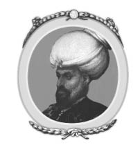
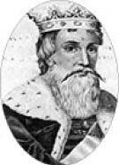
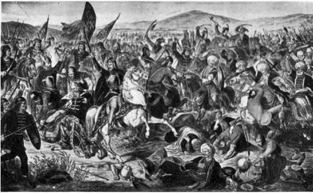

III: I.MURAD
1359-1389

Murad kırk yaşında babası Orhan’ın bıraktığı tahta geçti. Sahip olduğu dinçliği, askerî zekâsı, akılcı devlet adamlığı ve yorulmak bilmeyen tutumuyla devleti fazlasıyla iyi yöneteceğini kanıtladı. Okuma yazması yoktu. Kendi imzasını bile atamıyordu. Ragusa (Dubrovnik) şehrinde 1363 yılında küçük devletlerden biriyle yaptığı anlaşmada elini mürekkebe batırarak parmak iziyle imzaladığı bir anlaşma hâlâ mevcuttur. Böylece “Tuğra” sonradan gelen Türk sultanlarının resmî imzası olarak kaldı. Osman ve Orhan, Osmanlı hükümdarlığını ve devletini kurdu; ancak Murad da ona bağlı olan bütün ırkları yöneterek imparatorluğu kurup, itibar kazandı.
Murad tahta çıktığında, devlet sınırları Orhan tarafından genişletilmişti; ancak hâlâ Anadolu’daki birkaç Türk beyliğinden daha küçüktü. Marmara Denizi’nin iki tarafıyla, 320 kilometre uzunluğunda ve 160 kilometre derinliğindeki bir alanı kapsıyordu. Çanakkale Boğazı’nın iki kıyısını ve Boğaz’ın sadece bir kıyısını içine alıyordu. Öbür tarafta ise Osmanlılar tarafından neredeyse kuşatılan İstanbul vardı. Sözde özgürlerdi ve Trakya’da bulunan diğer Rum vilayetleriyle iletişim kurabiliyorlardı. Marmara Denizi’ndeki bölgeyi hesaptan düşersek, Murad’ın hükümdarlığı altındaki topraklar 5180 kilometre kareden büyük değildi. Topraklarında yaşayan nüfus ise bir milyonu geçmezdi. Murad böylesine küçük bir toprak parçasına sahipken nasıl oldu da imparatorluğunu Avrupa’ya kadar taşıdı, inanması güç. Tahminen Anadolu’nun diğer yerlerinden risk alarak ya da Avrupa’daki yağmalamalardan kaçan büyük sayıdaki topluluklar Türk alemine akın etti.
Çanakkale Boğaz’ının iki tarafına da sahip olmak ki, henüz barut bulunmamıştı, Boğaz’ın hakimiyetini sağlayabilmek anlamına gelmiyordu. Murad’ın donanması yoktu. Askerlerini Asya’dan Avrupa’ya geçirmek için sahip oldukları az miktarda denizcilik bilgisinin lütfuna kalmıştı. Kara Deniz kıyılarında ve Boğaz’daki Galata’da çok iyi bir ticarî yerleşim yeri kuran, ayrıca Ege Denizi’nde güçlü deniz kuvvetlerine sahip olan Cenevizliler, Osmanlı’nın Avrupa kıyısına giden yolunu açabilirdi. Rumlardan nefret ediyorlardı ve para konusunda da açgözlülerdi. Murad’ın ordusunu tam anlamıyla karşı kıyıya taşımak için de güvenilirlerdi. Öyle gözüküyor ki, Murad otuz yıllık hükümdarlığı sırasında Osmanlı’nın sahip olduğu toprakları beş katına çıkarmıştır, bir noktada imparatorluğu Tuna Nehri’ne kadar getirmiştir. Diğer devletleri ve hatta Rum İmparatorluğu’nu da kendi imparatorluğuna haraç vermesi için zorlamıştır. Murad’ın Osmanlı tarihindeki yeri en az İstanbul’u fetheden Fatih Sultan Mehmed ve İmparatorluğu en üst seviyesine getiren Kanuni Sultan Süleyman kadar önemlidir.
Murad’ın imparatorluğunu genişletmesini, kronolojik olarak üç ayrı ana başlık altında ele almak daha uygun olur.
I. Trakya’da ve Bulgaristan’da Bizans İmparatorluğu’nun egemenliğindeki bölgeleri fethetmesi ve itibarını kaybeden imparatorluğu küçük düşürerek derebeyliğine bağlaması.
II. Bulgaristan, Makedonya ve Sırbistan’daki büyük zaferi.
III. Diğer Türk emirliklerinin Osmanlı ile birleşmesi ve Murad’ın Anadolu’ya doğru genişlemesi.
1. Trakya’daki Fetihler
Beceriksiz ve talihsiz olan V. John Palaiologos’un yönetimindeki Rum İmparatorluğu, Murad’ın tahta çıktığı zamanlarda vahim bir durumdaydı ve çöküş dönemine girmişti. Daha önce zaten Avrupa’daki egemenliğinin ne kadar da azaldığını söylemiştik. Güveneceği ve ilerlemekte olan Müslümanların yoluna set çekebileceği hiçbir arkadaşı yoktu. Daha önceleri Avrupa’da bulunan Haçlı ruhu çoktan ölüp gitmişti. Latin ve Rum Kiliseleri arasında tatsız bir kavga vardı. Türklerden korkmaktan daha çok, birbirlerinden nefret ediyorlardı. Hıristiyan olan Latinlerin hepsi Rumların Roma Papalığı’ndan inmesi gerektiği şartını sürüyordu. Sonucunda imparatorluklarını Müslüman Türklerden kurtarmak dahi olsa, Rumlular açıkça bu duruma karşı geldiler.
Bu koşullarda, Murad hükümdarlığının ilk yılında, babasının planlarını takip ederek Avrupa’da fetihlerine başladı. Başkenti olan Bursa’dan ayrılıp Çanakkale Boğazı’nı geçerek, başında bulunduğu muhteşem bir orduyla Trakya’ya yürüdü. Murad’ın komutanları Evrenos ve Lala Şahin ordunun diğer iki kanadının başındaydı. Evrenos sola ayrılarak, İstanbul’a sekiz kilometre uzaklıktaki Tchorlu (Çorum) Kalesi’ni tekrardan kuşattı. Askerî birliği kılıçtan geçirip, kale duvarlarını yerle bir etti. Sağa ayrılan Lala Şahin ise Kırkkilise’yi işgal etti ve Karadeniz’den gelebilecek olası düşman saldırısına karşı orduyu korudu. Daha sonra merkezde bulunan ordusuyla Murad, diğer iki kanatla birleşerek 1363 yılında Eski Baba’da büyük bir savaşa imza attı. Bu savaşta ona karşı gelen Bizans ordusunu hezimete uğrattı. Savaşın sonucunda Adrianopol (Edirne) hiçbir zorluk çekilmeden fethedildi ve neredeyse bütün Trakya Murad’ın eline geçti. Lala Şahin daha sonra Meriç Vadi’sine ilerleyerek oradan Bulgaristan’a geçti ve Balkanlar’ın güneyinde, Bizans’ın egemenliğindeki Philippopolis’i (Plovdiv) işgal etti.
Başarılı işgallerin sonucunda Bizans imparatoru, Murad ile anlaşmak yapmak zorunda kaldı. Yaptığı anlaşmaya göre, imparator Trakya’da kaybettiği toprakların hiçbirini geri almayı denemeyecekti, ileride Osmanlı’nın Avrupa’da ilerlemesiyle oluşacak hiçbir durumda Bulgaristan’a ve Sırbistan’a yardımda bulunmayacaktı. Anadolu’daki düşmanları, Türk beyliklerine karşı Murad’ı destekleyecekti. Anlaşmadan sonra Murad, ordusunu toparlamak ve yeni girişimlerini düşünüp taşınmak için Bursa’ya geri döndü. Ancak kısa süre sonra çok büyük bir olay için tekrar Avrupa’ya çağırıldı. Asya ve Avrupa’da egemen oldukları bölgelerin Osmanlı tarafından işgal edilmesine ses çıkarmayan Hıristiyan güçleri, Bulgaristan’a yapılan ilerlemeyle alarma geçti. Papa V. Urban, Macaristan Kralı Louis’i, Sırp ve Eflak prenslerini harekete geçirdi. Hepsi birlik olarak Trakya’ya yirmi bin kişilik asker yolladı. Amaçları, Türkleri Avrupa’dan atmaktı. Murad onlarla yüzleşmek için acele etti; ancak Lala Şahin’in müttefiklere karşı ordu oluşturduğu anda bölgeye ulaştı. İki ordu 1363 yılında Adrianopol’la (Edirne) yakın olan Meriç Nehri’nde karşı karşıya geldi. Osmanlı ordusunun başında olan İlbeki, Hıristiyan ordusu neşeli bir cümbüş sonrası ağır uykularındayken, gece saldırdı. Büyük bir bozgun meydana geldi. Tük tarihçileri müttefik ordusu için şunları söyledi:
İnlerindeki vahşi hayvanlar gibi yakalandılar. Dumanından önce gelen alevler gibi onlar da Meriç Nehri’ne doğru püskürtüldüler ve sularında can verdiler.
Hıristiyan ordusunun kolayca kökü kurutuldu. Mucize eseri Macaristan kralı kaçtı. Bu Macarlarla Osmanlıların ilk çatışmasıydı. Bu olaydan sonra yüz elli yıl boyunca Avrupa’da kilitli kaldılar. Bu savaşın sonuncu olarak Balkan Dağları’nın güneyinde bulunan ülke Osmanlı egemenliğine girmiş oldu. Gece saldırmayı akıl edip büyük bir başarıyla savaşı yöneten İlbeki, onun bu başarısından dolayı kıskanan Lala Şahin’in isteği ile zehirlenerek öldürüldü.
Meriç savaşı Hıristiyanlar için ezici bir darbe oldu. Bunun sebebi ise Murad’ın fetihlerine Asya yerine Avrupa’da devam etmek istemesidir. Böylece Bursa’da bulunan hükümetini Trakya’ya taşıyarak Demotika’yı (Dimetoka) başkenti yaptı. Üç yıl sonra ise başkenti Adrianopol’ye (Edirne) taşıdı. İstanbul işgal edilene kadar doksan yıl boyunca Adrianopol başkent olarak kaldı. Böylece Balkan devletlerine fetihler düzenledi. Bir diğer sonucu ise Yunan İmparatoru V. John Palaiologos Osmanlı hükmü altına girmek için zorlandı. Sultana haraç vermeyi kabul etti ve ileriki savaşlarda Osmanlı ordusuna asker yollamayı göndermeyi kabul etti. Düştüğü derebeyliği durumundan oldukça sıkılan imparator, Hıristiyan güçlerini Osmanlılara karşı birleştirmesi için 1369 yılında Papa’yı ziyaret için Roma’ya gitti. Yokluğu sırasında imparatorluğun başına büyük oğlu Andronicus’u bıraktı. Papa V. Urban’ın desteğini kazanmak için Roma’ya vardığında, karşılaşabileceği en küçük düşürücü durumlarda kaldı. Kilisenin Ana Mihrabı’na gelmeden önce Rum Kilisesi prensiplerine ki, Roma’dan çok farklıydı, Aziz Peter Kilisesi’nde tövbe etti. Papa’nın dini üstünlüğünü kabul etti. Daha sonra Papa’nın önünde diz çökmesine ve eli ile ayağını öpmesine izin verildi. Papa’nın katırının dizginlerini tutma ayrıcalığına bile sahip oldu. Bu rezil ve küçük düşürücü durumun karşılığında hiçbir şey alamadı.
Papa Osmanlı’ya karşı Hıristiyan güçlerini toplayamaz ve kışkırtamazdı. İmparatorun Papa’ya imtiyaz vermesi İstanbul’daki Rum Kilisesi’nin Başpiskoposu tarafından da onaylanmadı. İmparator John Palaiologos geri dönüş yolunda acısını hafifletecek hiçbir şeyin olmayacağını kabul etmek zorunda kaldı. Geri dönüş yolunda Venedik’ten geçerken, görevini yerine getirebilmesi için ona para veren Venedikliler tarafından tutuklandı. Parayı geri ödeme gibi bir durumu olmadığından, yasal süreçten kurtulamadı. Andronicus da babasının İstanbul’a geri dönmesi gerektiğini düşünmüyordu ve istemiyordu. İmparatorun serbest bırakılması için para göndermek için hiç çaba sarf etmedi. Hazinenin zor durumda olduğunu açıkladı. Babasını seven imparatorun küçük oğlu Manuel bütün malını satarak parayı toparlayıp babasının salıverilmesini sağladı. İmparator İstanbul’a geri döner dönmez, beklendiği üzere oğlu Andronicus’u bütün görevlerinden mahrum etti ve oğlu Manuel’i yerine geçirerek Ortak İmparator ilan etti. Andronicus ile aynı adı taşıyan oğlu, babasının bu davranışı üzerine hiddetlendi ve Murad’ın en genç oğlu Savcı ile birlikte çılgın bir komplo kurdu. Amaçları iki imparatoru tahtlarından indirerek yerlerine geçmekti. Murad’ın Avrupa’daki ordusunun başında olan Savcı, Murad’ın Asya’daki yokluğundan faydalanarak, Osmanlı ordusunun bağlılığını rüşvet ile bozdu. İstanbul’un yakınlarında kayda değer büyüklükte bir ordu topladı. Aynı zamanda birçok Rum soylusunun oğulları ve askerleri ile bir araya geldi.
Murad, Bursa’dayken patlak veren bu çılgın olayı duyunca aceleyle Avrupa’ya döndü ve Rum imparator ile birlikte bir ittifak kurdular. İki imparator söz konusu başkaldırışı ortadan kaldırdıktan sonra, oğullarının bütün haklarını ellerinden almak üzere anlaştılar. Bunun üzerine Murad bulabildiği kadar askeri toparlayıp Savcı’nın ordusuyla karşılaşmaya gitti. Olayı duyar duymaz, gece askerlerine seslenerek, görevlerine geri dönerlerse, onları affedeceğini açıkladı. Onları sıklıkla zafere taşıyan sultanlarının sesini duyan askerler, hainliklerinden dolayı pişman oldular, yaptıkları aptallığı kabul ederek Savcı’yı terk ettiler. Savcı, Asndronicus ve soylular, ordunun bozulmasıyla yalnız kalarak Demotika’daki küçük kaleye sığındılar. Murad, iki isyankâr oğul ve soylularla beraber bu küçük kaleyi işgal etmek için çok fazla zorluk çekmedi. İmparator ile yaptığı anlaşmayı yerine getirmek için, oğlunu tahtan men etti ve hatta daha de ileri giderek öldürttü. Rum soylularını ikili üçlü gruplarda bir araya getirip bağlayarak Meriç Nehri’ne attı ve onlar boğulurken karşılarına geçip onları seyretti. Oradayken, ebeveynlere kendi evlatlarını öldürmelerini tavsiye etti. Ebeveynler bunu kabul etmeyince, oğullarıyla beraber bağlanarak Meriç Nehri’nde boğulmaya terk edildi. Bu olayla birlikte Murad göze çarpan acımasız bir mizacı olduğunu gösterdi ki, arkasından gelen birçok Osmanlı hükümdarı da ona benziyordu. Andronicus ise Rum imparatora teslim edildi, sözünü tam anlamıyla yerine getirmese de torununu her şeyden men etti.
Bu olayların sonucunda İmparator John Palaiologos, Murad’la yeni bir anlaşma imzalamak zorunda kaldı. Anlaşmanın şartları da şöyleydi: “Egemenliği olan yerde hayatının sonuna kadar barış içersinde yaşayabilirdi.” Kendisini sultanın derebeyi yani tımarı olarak tanıdı, Osmanlı ordusunda askerlik yapacaktı ve tutsak olarak oğlu Manuel’i verdi.
2. Makedonya, Bulgaristan ve Sırbistan’ın İşgali
Osmanlı’nın Trakya’yı işgal etmesi ve müttefik olmuş Hıristiyanları Meriç Nehri’nde bozguna uğratması, müttefiklere ve Bizans İmparatorluğu’na yardımda bulunmayan Bulgaristan’a darbe vurdu. Adrianopol (Edirne) ve Philippopolis’in (Plovdiv) ele geçirilmesiyle Bulgaristan ve Makedonya’ya giden yolları açtı. Ancak Murad 1366 yılına kadar kendisine avantaj sağlayan bu fırsattan istifade etmedi, kendisini Makedonya’nın efendisi yapacak ve Bulgaristan ile Sırbistan’ın bir bölümünü alacağı birçok saldırıda bulundu. O zamanlarda bölgedeki dış ilişkiler kendisine çok yardım etti. Bulgarlar, Sırplar, Bosnalılar ve Rumlar birbirlerini çılgınca kıskanıyordu. Hepsi Osmanlı’nın kendilerine rakip gördükleri devletlere doğru genişlemesini istiyordu. Eğer Bulgaristan tek başına bir bütünlük gösterebilseydi, Murad’ı yenebilirdi. Ancak 1365 yılında çarları Alexander öldü ve krallığı üç oğlu tarafından bölündü. Büyük oğlu Sisman en büyük parçasını aldı. Osmanlı ağabeylerinin ülkesini işgal ederken iki kardeş yardım etmedi. 1366 ile 1369 yılları arasında Murad Bulgaristan’a yürüdü ve Meriç Vadisi ile Rhodope (Rodop) Dağlarına kadar ilerledi. 1371 yılında Lala Şahin Sofya şehrinin yakınlarında, Samakof’da Bulgar ve Sırp ordusuyla çarpıştı. Çarpışmayı kazan sultan Bulgaristan dahil olmak üzere Balkanlar’a kadar bölgeyi Osmanlı egemenliğine kattı. Buralar yaşadığımız zamana kadar, tam beş yüz yıl boyunca Osmanlı hükümdarlığının altında yaşadı.
Lala Şahin’in Samakof’da kazandığı büyük zaferden sonra Murad, Lala Şahin’in Bulgaristan seferinin Balkanlar’ın kuzeyine kadar devam etmemesini söyledi. Bunun yerine batıya doğru ilerleyip orada Evrenos ile birleşip birlikte Vardar Nehri boyunca Makedonya’yı işgal etmelerini söyledi. Bu sefer iki komutanı 1371-72 yıllarında meşgul etti. Kavala, Druma (Drama) ve Serres (Serez) iki komutan tarafından alındı. 1372 yılında Vardar Nehri’ni geçerek Eski Sırbistan, Arnavutluk ve Bosna’yı delip geçtiler. Ancak Sırbistan’ın merkez bölgeleri Prens Lazar’ın elinde kaldı. Fakat Osmanlı sultanının hükümdarlığını tanımak zorunda kaldı. Prensleri Sisman’a itibar ederek Bulgaristan topraklara eklenmedi, özgürlüğünü elinde tutmasına izin verildi. Prensin kızı Murad’ın haremine girdi ve Müslümanlığı seçmesi için zorlanmayacağına dair anlaşmaya varıldı. 1381 yılına kadar Murad herhangi bir sefere çıkmadı. Daha sonra ordularını Vardar Nehri’nin karşı kıyısına, Monastir’ı (Manastır-Bitola) işgal etmeleri için yolladı. Sofya’yı da kendi topraklarına kattı ve Sırbistan’la yaptığı sert bir savaş sonrası 1386 yılında Nisch’i (Niş) aldı.

Prens Lazar
3. Murad’ın Küçük Asya’yı Alması
1376 ile 1380 yılları arasında Murad bütün dikkatini Küçük Asya’ya verecek fırsatı yakaladı. İlk yılında ilk önce hiç şüphesiz savaş tehdidiyle Kermia Beyliği’ini (Germiyan Oğulları) ikna etti ve en büyük oğlu Beyazıd’a beyin kızını aldı. Beyin kızı kendisiyle beraber çeyizi olarak Kermia’nın kayda değer bir bölümünü ve çok büyük stratejik bir konumu olan Kutayia (Kütahya) kalesini sundu. Bunu takiben 1377 yılında Hamid emirine, Tekke İle Kermia arasında bulunan emirliğinin büyük bir kısmını, Karamania’yı (Karaman) ve Akşehir’i kendisine sattırdı. Bütün alanları almak istemesinin sebebi ise Karamania ile komşu olmaktı. 1378 yılında tekrardan Tekke Beyi’ne savaş açtı ve ona Adalia’yı (Antalya) bırakarak bölgesinin büyük bir bölümünü topraklarına kattı. Karamania (Karaman) Emiri Alâeddin’e savaş açana kadar, yani 1387 yılına kadar Murad Asya’da topraklarını genişletmek için başka bir sefere çıkmadı. Bu seferi için ise Rum imparatorunu, Sırp ve Bulgar prensini tımarları olduğu için askerlerini yollamalarını istedi. İki oğlu Beyazıd ile Yakup ordusunun iki kanadını komuta ediyordu. Köylü sınıfının gönlünü almak için aralarından geçti ve onlar da ordusuna yemek yollayarak levazımlarını sağladı. Kesinlikle yağmalama yapmamalarını ciddi bir şekilde belirtti ve ülkesinde yaşayan halka ve topraklarına saygı duyulmasını emir buyurdu. Bölüklerin içinde, yaptıkları anlaşmaya sadık kalarak Sırp prensinin yolladığı iki bin asker vardı. Ancak bu askerler Murad’ın emirlerine uymayı reddederek ordunun gittiği yol üzerinde felaket yıkıma sebep oldular. Murad askerlere ciddi cezalar verip diğerlerinin gözlerini korkutup uyarmak için de bir kısmını öldürttü. Daha sonra ordu Karamania (Karaman) ile çarpışmak için devam etti. Angora (Ankara) vadisinde bir savaş meydana geldi. Beyazıd süvarileriyle birlikte sert bir şekilde taarruza geçerek kendi adından söz ettirdi ve lakap olarak “Yıldırım” adını aldı.
Bu savaşı anlatan farklı yorumlar vardır. Bazı tarihçiler bu savaşı Murad’ın büyük zaferi olarak anlatır ve yenik düşen Karamania (Karaman) beyine son derece cömert davrandığını, ayrıca ondan sadece sembolik olarak boyun eğmesini istediğini rivayet ederler. Ancak Murad, askerlerinin kazandığı başarıyla avantaj sağlamayı ihmal etti. Bu durumda çok açık ki, imparatorluğunu genişletmeyi başaramadı. Karamania (Karaman) özgürlüğünü uzun yıllar sürdürdü ve sözde derebeyliğine bile riayet etmedi. Bu savaşın son derece şüpheli olduğunu söylemek daha doğru olur; çünkü Murad amacına ulaşamadan geri çekildi.
Artık yetmiş yaşında olan Murad geri kalan hayatını sükunet içersinde geçirip sonlandırmaktan mutlu olurdu; ancak Sırbistan’da patlak veren bir ayaklanma sebebiyle Avrupa’ya çağırıldı. Sonradan anlaşılıyor ki, Karamania (Karaman) seferi için Murad’ın ordusuna katılan askerler, geri döndüklerinde Murad’ın diğer askerleri öldürttüğünü söyledi. Bu olay Sırplar arasında büyük bir öfke ile karşılandı. Düşmanın ülkesinden hiçbir haraç ve mal alınmayan bir savaşı anlayamadılar. Bütün Sırplar isyan çıkardı. Bulgarlar, Bosnalılar ve Arnavutlar bir ittifak kurdular. Macaristan ve Eflak eyaleti de yardım etti. Murad tekrardan Osmanlı ordusunun başına geçerek Balkanlar’ı geçti. Schumla ve Tirnova’yı (Tırnova) ele geçirdi ve sonra Danube’ye yürüdü. Bulgar Kralı Sisman, Danube üzerindeki Nicopolis’e (Niğbolu) kapanarak bu kötü durumu kabullenmek zorunda kalmıştır. Osmanlı’ya Silistre’yi verip, ayrıca haraç verme konusunda çaresizdir.
Lazar ise, bütün bu bozguna karşı Silistre’yi Osmanlı’ya kaptırmama konusunda kararlıdır. Her ne kadar Sisman anlaşmayı bozmuşsa da, sisman hücumlarını şiddetlendirir. Murad, ordunun bir kısmını Ali Paşa komutasında Sisman’ın üzerine salar. Böylelikle Nicopolis de düşer. Murad, Sisman’ın hayatını bağışlamakla birlikte Güney Bulgaristan’ın tamamını Türk İmparatorluğu’nun topraklarına dahil eder.
Lazar, savaşı sürdürmeye kararlıdır. Murad, yetmiş yaşında olmasına rağmen, Küçük Asya’da olduğu gibi, iki oğluyla birlikte ordusuna destek vermeye devam eder ve savaş, Sırbistan ve Bulgaristan sınırındaki Kosova meydanına sürüklenir. Tam anlamıyla Kosova bir kıyım meydanına döner.

I. Kosava Savaşı
Oldukça kritik bir anda, bir önceki gün yanlışlıkla ve her nedense vatan haini olarak ilan edilen bir Sırp soylusu olan Milosch, büyük bir vatanseverlik örneği göstererek Türk sınırına kadar yaklaşır ve Sultan’a bir mesajının olduğunu söyledi. Milosch’un Murad’a yaklaşmasına izin verildi ve onun önünde eğilirken kalbine bir hançer saplayarak ölümcül bir yaraya sebep oldu. Daha sonra Milosch çaresizce kaçmaya çalıştı; ancak bu çabası nafileydi. Yakalanarak sultanın çadırına getirildi. Aynı zamanda Murad ölüme çok yaklaşmış olmasına rağmen, yedek askerlerine emirlerini verip, Osmanlı’nın lehine karara vararak savaş açtı. Sırplar ve onların müttefikleri bozguna uğratıldı. Lazar tutuklanarak sultanın çadırına getirildi. Murad, Lazar ve Milosch’un öldürülmesini emredecek kadar hayatta kalabildi. Daha sonra son nefesini verdi.
Aynı günün daha trajik bir hal alması için, babasının öldüğünü duyan ve kendisinin tahta geçtiğini öğrenen Beyazıd, bir çok savaş meydanında yiğitçe omuz omuza savaşan kardeşi Yakup’un öldürülmesini emretti. Babasının ölümü Yakup’un ölümünü etkiledi. Söz konusu vahşi eylem Kur’an’dan alıntı yapılarak haklı konuma getirildi: “Fitne adam öldürmekten kötüdür.” Beyazıd kardeşi Yakup’un tahtı isteyeceğini varsaydı. Bu ölüm, Osmanlı soyundaki ilk kardeş katli olarak kayda geçti. Bundan sonra Türkiye’de tahta geçen sultanlar tarafından sürekli bir uygulama haline geldi. Tahta geçen sultanın ilk işi kardeşlerini ve onların yandaşlarını, ona karşı itirazda bulunmasınlar diye, öldürtmek oldu.
Yasalara göre, hükümdarlık yapan ailenin yaşayan en büyük erkeği tahta geçer, ölmüş olan sultanın en büyük oğlu değil. Bu olay kardeş katli uygulamasına yeni bir motif getirdi, tahta geçen sultan, kardeşlerini ve amcalarını öldürterek, kendinden sonra tahta en büyük oğlunun geçmesini garantiye alıyordu. İlerleyen zamanlarda halk kardeş katline sıcak bakmamaya başladığında ve ailedeki en büyük erkeğin tahta çıkması halk tarafından daha çok benimsendiğinde, sultan tahta geçtikten sonra, kendisinden sonra gelecek olan vârisi ki, bu genellikle kardeşi oluyordu, tutuklayarak hapsediyordu. Bu uygulamadan yola çıkarsak eğer, tahtın vârisleri, devlet yönetiminde ya da orduda komutan olarak görev almalarının yerine, tutuklanarak hiçbir devlet işine karıştırılmıyordu. Sultanın hükümdarlığı boyunca, tahtın diğer vârislerinin zorunlu inzivaya çekilmesi Osmanlı hanedanının yozlaşmaya başlamasının nedeni olarak görülebilir.
Murad’a tekrar dönersek eğer, kendi hükümdarlığı sırasında, Osmanlı’nın büyümesinde çığır açtığını göstermiştir. Yirmi dört yıl boyunca süren savaşlarda hep savaş alanında kendi ordusunun başında bulunmuştur, aksi görülmemiştir. İmparatorluğunu ilk defa Türklerin ve Bizanslıların bulunmadığı büyük alanlara taşımıştır. Bunun yerine güçlü kuvvetli Hıristiyan halkının yaşadığı, Bulgaların, Sırpların ve Bosnalıların yaşadıkları bölgelere doğru topraklarını genişletmiştir. Hatta Türkler ilk defa Macaristan ile bir çatışmaya girerek onları bozguna uğratmıştır. Osmanlı etkisi Tuna nehrine kadar genişlemiştir. Bazı müdahale edilen bölgelere, fethedilen ve imparatorluğa eklenen topraklar olarak bakılmamıştır. Bu bölgeler Sırbistan’da olduğu gibi ya haraca bağlanmıştır ya da derebeyliği haline getirilmiştir.
Murad savaşmadığı zamanlarda bütün dikkatini babasının ona bıraktığı ordusunun daha iyi olması için düzeltmelerini yapardı. Ayrıca Avrupa’da fethettiği Hıristiyan nüfusu olan bölgelerden asker toplayarak yeni bir bölük kurmuştur. Bu ordu adıyla çok şöhretli olan Yeniçerilerdir. Von Hammer ve onu takip eden birçok tarihçi ayrıca son zamanlarda da Sir Edwin Pears, söz konusu ordunun kuruluşu ve kuran kişi hakkında ayrıntılı bilgiler verir. Hıristiyan ailelerinden kopartılarak, yaşları on ile on iki arasında bulunan bin adet erkek çocuğunun her yıl askere alındığını açıklarlar. Özellikle aralarından en akıllıları ve fiziksel anlamda en güçlüleri seçilir. Askerler zorla İslam dinine döndürülür ve sultanın kendi talimatlarıyla sıkı bir şekilde askerî kariyer yaptırılarak eğitilirlerdi. Altı yılın sonunda özel bir birliğe geçtiler, birkaç yıl sonra da tam on iki bin kişilik askerî bir birlik oluşturdular. Birliği çok ciddi ve sert bir biçimde disiplin veriyorlardı. Osmanlı ordusunun en verimli ve en güvenilir birliği haline geldi. Onları disiplin altına alan adam, babaları gibiydi. Hayatlarını ona adamışlardı. Mülk sahip olmalarına izin verilmezdi. Elde ettikleri her şey yöneticilerine aitti. İmparatorluğun ileri zamanlarına kadar evlenmeleri yasaktı. Savaşta Osmanlı ordusunun belkemiğini oluşturuyorlardı. Bir çok zorlu savaşta, yenilgi ve felaket an meselesiyken düşmana karşı korkusuz ve sağlam duruşlarıyla orduyu kurtarırlardı. Murad’ın amacı sadece Yeniçeriler gibi güçlü duran bir ordu yaratmak değildi, kendilerini sultana adamış ve diğer güçlerin şamatacılığını bastıracak bir ordu kurmaktı.
Bu güç birliği için Sir Edwin Pears şunları söylemiştir:
En zeki topluluğun içinden erkek çocuklarını topla; zekalarına ve güçlerine göre onları seç; savaş sanatını dikkatlice öğret; onları askerî disiplin altında topla; çocukluklarını, ailelerini ve arkadaşlarını unuttur; bütün umutlarını alaydaki yerleri olduğunu aşıla; terfiler ver, zorlukları yenmeleri için baskı altında tutarak konuşmalar yap ve barışı sıkıcı, savaşı ise zevkli hale getir; böylelikle bir liderin elinde dünyada eşi görülmemiş bir güç oluşur. Aynı Yeniçeriler gibi bir ordu oluşur.5
5 Gibbons’un söz konusu Yeniçeri birliği ile ilgili anlatımları daha önceki yazarlar tarafından reddedildi ve maddeleştirdiği anlatımın sözde olduğu söylendi. Bu sorunun üzerine uzun zaman harcadıktan sonra bu sayfalara eski Yunan ve Türk tarihini çok iyi araştırmış olan Sir Edwin Pears’ın yorumunu ekledim. Ancak Gibbons’a sadece bir konuda hak veriyorum o da: söz konusu ordunun şekillenmesinin Orhan’dan çok I. Murad’da ait olduğudur. Gibbons’ın Yeniçeri ordusu ile ilgili açıklamalarını Foundation of Ottoman Empire çalışmasının 118 ve 120. sayfaları arasında, Sir Edwin Pears’ın açıklamasını ise Destruction of Greek Empire çalışmasının 223 ve 230. sayfaları arasında bulabilirsiniz. Pears, p. 228.
Çocuklarının asker olarak toplanması Hıristiyan kanı taşıyanlar için en acımasız vergi olarak görülürdü. Bu birlik ise, onları kontrol edecek kadar güçlü olan sultanın elindeki en önemli silahtı. Ancak daha sonra aslından uzaklaşan sultanların elinde bir çeşit Praetorian Muhafızları haline geldi. Sultanı tahtan indirerek kendi istediklerini başa geçirecek konuma geldiler.
Ayrıca sürekli savaş ve sefer istekleri oluyordu. 1648 yılında IV. Mehmed zamanında, sadece Hıristiyan çocuklardan yaratılan oluşum artık kısıtlanmadı ve Yeniçerilerin oğulları ile Müslümanlar da orduya alındı. Daha sonra ise Hıristiyan çocuklar tamamen yasaklandı ve sadece Müslümanlar birliğe katılabildi. Sultan Süleyman’ın zamanından sonra ise sayıları oldukça arttı. Devlet için bir tehlike unsuru haline geldi. 1826 yılında II. Mahmud kendisinin ve daha önceki sultanların küçük düşürülmesinin öcünü, kanlı bir sahneyle aldı.
Ancak hiç şüphesiz ki, Murad’ın Yeniçeri ordusunu Avrupa’daki Hıristiyan halktan oluşturması öyle bir askerî silah yarattı ki, bu ordu iki yüz yıl boyunca Osmanlı’nın yükselmesinde kilit nokta oldu.
Knolles, Türk İmparatorluğu’nun çizimsel tarihini anlattığı kitapta, Murad’ın karakterini şu cümlelerle aktarmıştır. (İçeriği daha fazla genişletilemezdi)
Murad gelmiş geçmiş bütün Türk krallarından daha şevkliydi, çok cesur bir adamdı ve bütün girişimlerinde ise şansı yaver gitti; babasından ve dedesinden daha fazla düşmanı bozguna uğrattı; kılıcıyla, evlilikle ve satın alarak Asya’daki topraklarını genişletti. Rum prenslerinin arasındaki korkaklığı ve fikir ayrılığını kendi yararına kullandı. Trakya’nın çok büyük bir bölümünü ve bitişiğindeki yerleri kontrolüne aldı. İlâveten İstanbul imparatoruna, neredeyse isimsiz ve imparatorsuz olan bu krallığa, Trakya’da çok az bir bölge ile imparatorluk şehrini bıraktı. Bulgaristan’ın kayda değer bir bölümünü ele geçirdi, Sırbistan, Makedonya ve Bosna’ya girdi. Özgürlükçü ve bununla beraber de sertti; ancak bütün adamları ondan hem korkar hem de severdi, az konuşurdu ve duygularını asla göstermezdi.6
6 Knolles, i.p. 139.